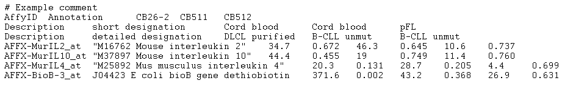

This is an example of an input file that the application will accept as a correctly formatted "Affymetrix File Matrix " file type (only the first 8 lines of the file are shown):

Files in this format can contain data for more than one microarray (in the example above there are 3 microarrays named CB26-2, CB511 and CB512). Any number of comment lines, each one starting with a #, can precede the actual array data (however, no empty lines are allowed before, after or between comment lines). All comment lines will be ignored during file parsing. The beginning of the actual data is marked by the first row that does not begin with a # character. This row is expected to have N+2 tab-separated column names. The first column name must read "AffyId"; the second column name must read "Annotation". The subsequent N entries are assumed to be the labels of the N microarrays whose data are contained in the file. Any string can be used as a microarray label as long as it does not contain tab characters.
Then a number of "Description" lines follow (zero or more of them). Description lines can be used to group microarrays into array sets (see online help section on "Markers and Phenotypes" for a description of array sets; or read the online tutorial titled "Data Subsets" in the Tutorials section of the geWorkbench web site, http://www.geworkbench.org). Each line describes one collection of array sets and comprises N+2 tab separated entries. The first entry must be the word "Description". The second entry is the label that will be used in the application to identify this collection of array sets (users can select which collection to work with from the "Array/Phenotype Sets" drop-down menu within the Arrays/Phenotypes application component). The following N columns are array set labels that map one-to-one to the N arrays listed in the "AffyID" line; their relative order in the description line determines how the arrays are grouped into sets. E.g., in the example above the first description line defines a collection of 2 array sets: the first set is called "Cord blood" and contains the arrays CB26-2 and CB511. The second set is called "pFL" and contains the array CB512. The collection of these two array sets is itself named and is called "short designation".
The last part of the file contains the actual expression measurements. There is one line per marker on the chip (there are 4 such lines in the example). Each line starts with the name of the marker. The name is followed by a string that provides a human readable annotation of the marker (this entry must contain a non-empty string; if there is no meaningful annotation to be associated with a marker then the marker name may replicated here or a series of one or more space characters can be used). The measurement values follow the annotation string. This portion of a data line can assume one of two possible forms: